Why has LEGO shifted so drastically over the years?
What happened to the commercials where the sets are being played with in an epic scene with cool animations??
Why does LEGO seem to be more tailored towards adults now???
Are they actually tailoring their products and stores towards adults?!
With research along with my own personal experience with LEGO sets of varying ages, I will be answering all of these questions.
LEGO’s original core customer age segment was 2-12 years old. They picked up the adult segment when they realized that there could be a market for those who purchased sets for nostalgia, collecting, or stress-relief. In 2020, they introduced the simplified, more professional-looking block boxes that are used for 18+ age-rated sets. With this, there is now a super clear distinction for both adult and child customers as to what sets they will gravitate towards.
Obviously, adults have more money than kids. You would think this means that 18+ LEGO sets make more money. That is what I would infer. I am an entrepreneurship minor at Rutgers University who wants to take a deeper dive into this phenomenon via this website.
If you are someone who is interested in conducting venture research like myself, you will find this information captivating. If you are a LEGO super-fan, also like myself, you might also find some interest in this site.
I have compiled data that displays the ratio of 18+/-18 sets to the number of reviews that the LEGO set received on lego.com and amazon.com. The review totals combined from these two online LEGO top-sellers gives us an idea of relatively how many people were buying these sets.
I chose three different series to analyze since the series itself can alter the popularity of the sets.
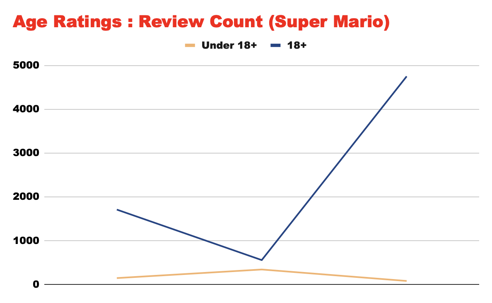
In our Super Mario age rating:review count ratio, we can see that the -18 rated sets never received nearly the amount of reviews as and 18+ ones. The 18+ Mario sets certainly gain more traction. Something else to keep in mind here is that there are significantly more -18 Mario sets available than 18+, which probably spreads out the -18 market.
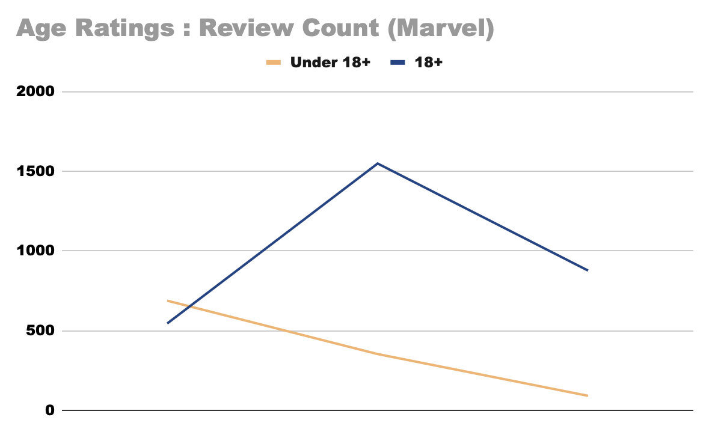
The left side of Marvel graph shows an intersection, meaning that there is a -18 set that received more reviews than an 18+ set. Marvel offers a lot more 18+ sets. Something to note in this case is that adult audiences find a lot of appeal in some of the -18 sets; there are several instances in Marvel where the same subject of an 18+ set is represented smaller and cheaper as a -18 set.
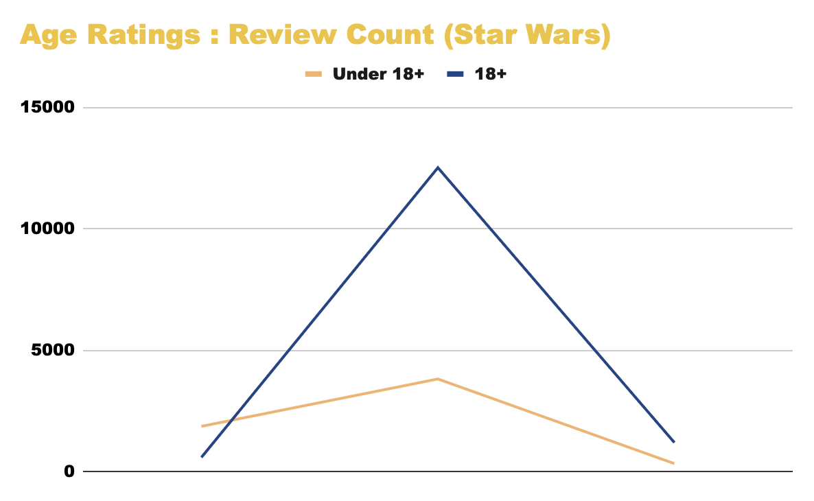
We also see an intersection with the Star Wars graph. Star Wars also has a point in the 10,000-15,000 range, which is much higher than we see with the other franchises. Overall, however, the 18+ sets seem to perform better once again.
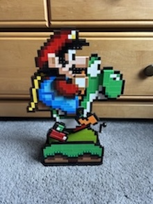
Front
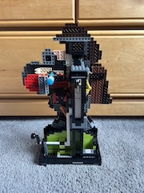
Back
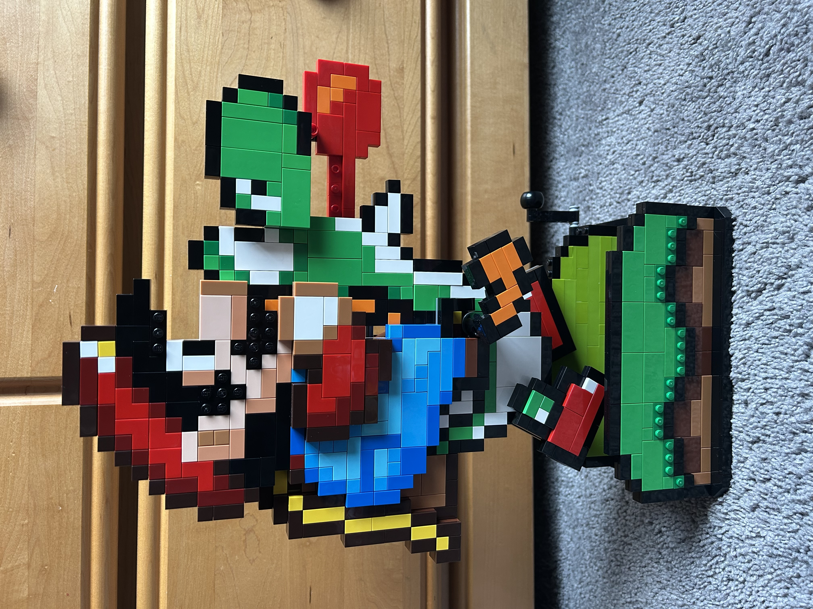
Tongue Extended
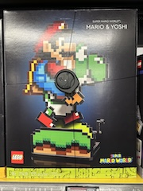
18+ Box Art
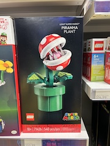
18+ Box Art
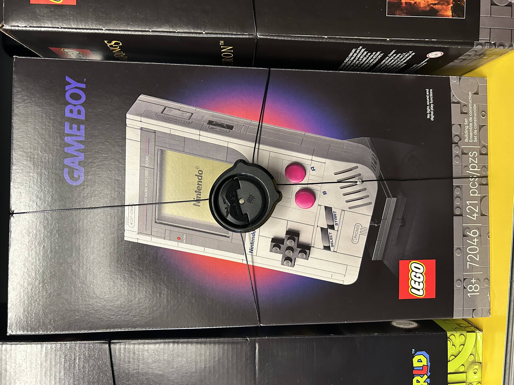
18+ Box Art
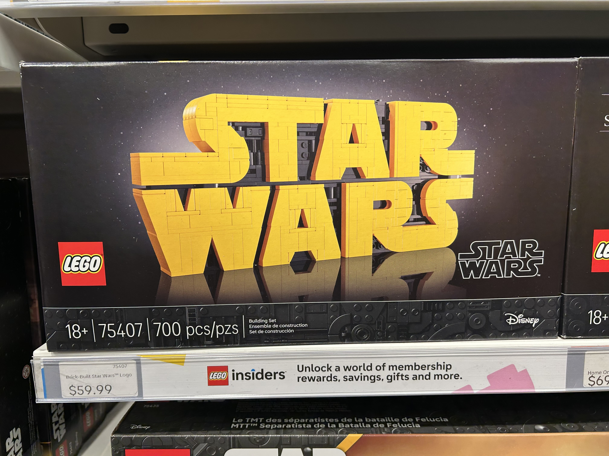
18+ Box Art
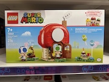
Under 10+
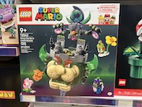
Under 10+
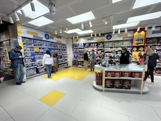
LEGO Store NYC
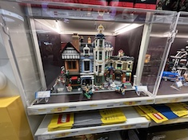
Display
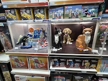
More Displays
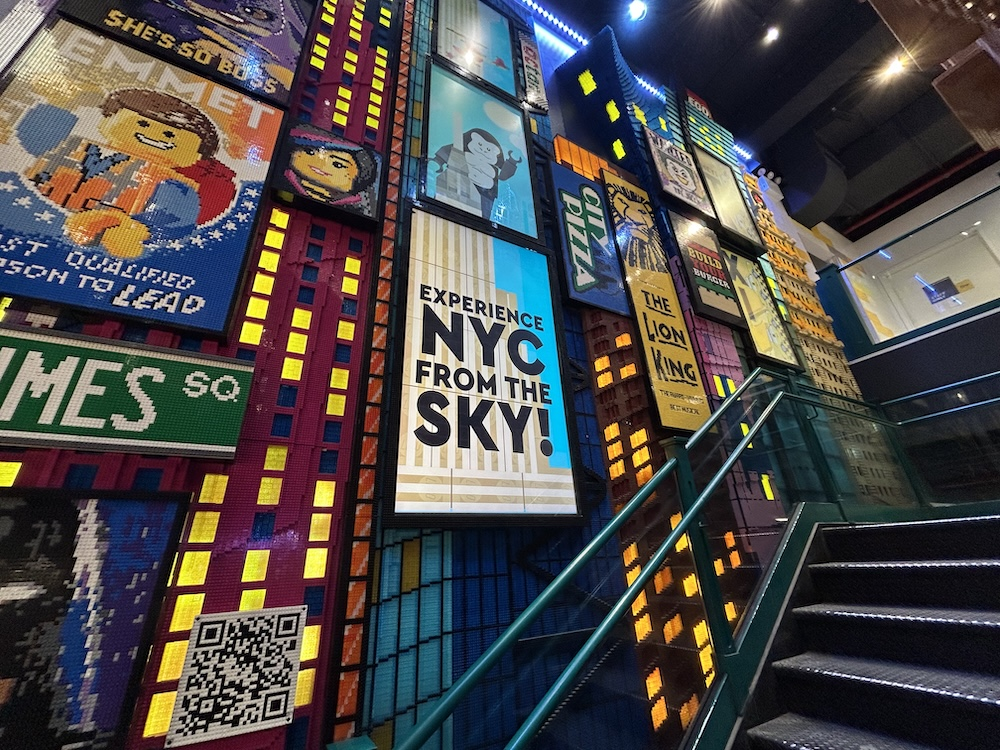
Main Art Display